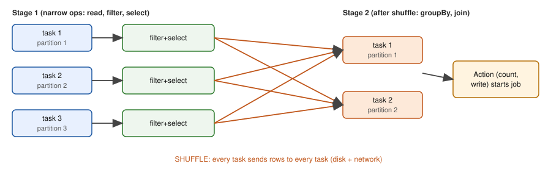

Your ShopKart fct_orders grew to 2 billion rows and 400 GB of Parquet files. One laptop, or one pandas script, cannot hold it. The warehouse of Chapter 8 can, but some jobs are awkward in SQL: parsing messy logs, calling a Python library per row, or processing files that never go into a warehouse. Apache Spark is an engine that splits a big dataset into pieces, sends the pieces to many machines, and runs your program on all of them at once. PySpark is how you drive it from Python. In this chapter you will learn the architecture (driver, executors, jobs, stages, tasks), the two kinds of operations (transformations and actions), why Spark delays work until the last moment, and how joins and window functions behave on partitioned data. We will use hand-worked partition examples and small Python simulations that you can run. Chapter 10 then teaches how to make Spark fast.
Honest note: pyspark is not installed here and cannot be downloaded in this sandbox, so every PySpark snippet is labelled not run here. The simulations in plain Python and SQLite are real and were run. They are teaching toys, not Spark. If you want to try real Spark, install it on your own machine (pip install pyspark, Java required) or use a free Databricks Community-style notebook if available to you.
Running example: eight ShopKart orders (order_id, city, amount), small enough to follow by hand.
| Word | Plain meaning | Example |
|---|---|---|
| Cluster | A group of machines working together | 10 machines |
| Driver | The one process that runs your program, plans the work and collects results | Your notebook or spark-submit main program |
| Executor | A worker process on a cluster machine that runs tasks and holds cached data | 10 executors with 4 cores and 16 GB each |
| Cluster manager | Software that gives the driver machines to use: YARN, Kubernetes, standalone Spark, or a managed one (Databricks, EMR) | Kubernetes |
| Partition | One slice of the dataset that a single task processes | 128 MB of a Parquet file |
| Task | The unit of work: one operation chain on one partition | "filter and select on partition 3" |
| Stage | A group of tasks that can run without moving data between machines | Read + filter + select |
| Job | The whole set of stages produced by one action | "count the orders" |
| Shuffle | Redistributing rows across the network so rows with the same key meet | groupBy("city") |
| DAG | The plan graph of stages (Chapter 6 for the idea) | Stage 1 then Stage 2 |

How to read the picture: the box labelled Stage 1 shows tasks, one per partition, each doing filter and select on its own slice. No data moves between them. Then comes a big shuffle arrow: every task sends rows to every task of Stage 2 (writing to disk and sending over the network). Stage 2 runs groupBy or join on the reshuffled partitions. The action at the top (such as count or write) is what starts the whole job.
Your PySpark code (driver)
| builds a logical plan (lazy)
v
Catalyst optimizer -> physical plan -> stages
|
v
+-------------+ tasks +-----------+ +-----------+ +-----------+
| cluster mgr | ------------> | executor1 | | executor2 | | executor3 |
+-------------+ | cores=4 | | cores=4 | | cores=4 |
+-----------+ +-----------+ +-----------+
^ results
+---------------- driver collects (small!) <---------------+Three counting rules to remember:
filter, select and withColumn are narrow: each output partition depends on one input partition.Problem 9.1.1 A job reads 400 GB of Parquet in 128 MB splits. The cluster has 10 executors with 4 cores each. How many tasks in the read stage, how many slots, and how many waves?
| Formula | tasks = data size / partition size; slots = executors × cores; waves = ⌈tasks / slots⌉ |
|---|---|
| Plug in | 400 GB = 400 × 1,024 MB = 409,600 MB; ÷ 128 MB |
| Compute | tasks = 409,600 / 128 = 3,200. Slots = 10 × 4 = 40. Waves = ⌈3,200 / 40⌉ = 80 |
| Answer | 3,200 tasks, 40 slots, 80 waves. If each task takes 6 seconds, the stage takes about 80 × 6 = 480 seconds (8 minutes). |
| Check | 80 waves × 40 slots = 3,200 tasks, so no task is left over. |
| Why it matters | This is the same arithmetic as a restaurant kitchen: work (dishes) divided by parallel capacity (cooks), times the time of one unit (minutes per dish). |
In an interview, "explain what happens when I call df.groupBy('city').count().show()" expects: lazy plan, optimizer, a shuffle that splits stages, tasks per partition, results returned to the driver. You can now answer.
Check yourself
groupBy or join).select and filter, describe a new DataFrame, and actions, such as count and write, run the work. Lazy evaluation means nothing runs until an action is called.spark.sql("select ...")). DataFrame code and SQL compile to the same plan, so choose whichever is clearer.| Kind | What it does | Examples | Returns |
|---|---|---|---|
| Narrow transformation | Each output partition from one input partition; no shuffle | select, filter, withColumn, map, explode | A new DataFrame (a plan, no work) |
| Wide transformation | Needs rows from many partitions; causes a shuffle | groupBy().agg, join, distinct, orderBy, repartition | A new DataFrame (a plan) |
| Action | Triggers real execution | count, show, collect, write, take | A number, rows or files |
Lazy evaluation means transformations only record a plan. Why is this good? Spark sees the whole plan before running and can reorder it: push the filter before the join, read only the needed columns of the Parquet file (column pruning) and skip row groups that fail the filter (predicate pushdown, Chapter 3.2).
Our toy DF class records a plan in a tuple and only runs it when count() is called. We split the 8 orders into two partitions (round-robin: order 1 to P0, order 2 to P1, and so on). Predict: what are the two partitions? And will anything run when we write filter and map?
Real output of the part of the script that builds and runs the plan:
input partitions:
P0 [('o1', 'pune', 250), ('o3', 'pune', 50), ('o5', 'mumbai', 300), ('o7', 'mumbai', 40)]
P1 [('o2', 'delhi', 120), ('o4', 'delhi', 80), ('o6', 'pune', 100), ('o8', 'delhi', 60)]
built plan, nothing ran yet; plan has 2 steps
running plan: ['amount>=100', 'to float']
count() = 4Explanation:
parts=[orders[i::P] for i in range(P)] takes every second order starting at index 0 and at index 1: that is P0 and P1 above. Real Spark partitions by file splits, but the idea is the same.df.filter(...).map(...) printed "built plan, nothing ran yet; plan has 2 steps". The class only did s.plan+(...). That is a transformation: it returns a new object holding a longer plan.q.count() is the action. Only then does the line running plan appear. The plan runs per partition: each partition applies filter then map independently (narrow, no network), then the counts are added at the driver.The same program in PySpark (not run here):
from pyspark.sql import SparkSession, functions as F
spark = SparkSession.builder.appName("shopkart").getOrCreate()
orders = spark.read.parquet("s3://shopkart-lake/silver/orders/") # transformation: lazy
big = (orders
.filter(F.col("amount") >= 100) # narrow
.withColumn("amount_f", F.col("amount").cast("double"))) # narrow
print(big.count()) # ACTION: the job runs now
big.explain() # prints the physical plan; no jobWe now do groupBy("city").sum("amount") by hand in two stages. This is exactly what Spark does: partial aggregation on each partition first (the map side), then a shuffle that sends each city to one new partition chosen by hash(city) mod 2, then a final sum (the reduce side). Real output of our simulation:
Stage 1: partial sums per input partition (no network)
P0 {'pune': 300, 'mumbai': 340}
P1 {'delhi': 260, 'pune': 100}
Shuffle: send each (city,partial) to partition hash(city)%2
new P0 {'mumbai': [340], 'delhi': [260]}
new P1 {'pune': [300, 100]}
Stage 2: final sum
P0 {'mumbai': 340, 'delhi': 260}
P1 {'pune': 400}
rows shuffled with partial agg: 4 vs without: 8Follow it by hand: in P0, Pune has 250 + 50 = 300 and Mumbai has 300 + 40 = 340. In P1, Delhi has 120 + 80 + 60 = 260 and Pune has 100. The hash sends pune to new partition 1, and mumbai and delhi to partition 0 (the hash is zlib.crc32; real Spark uses Murmur3, so the exact placement differs, but the principle holds). Final: Pune 300 + 100 = 400, Mumbai 340, Delhi 260. Check: 400 + 340 + 260 = 1,000 = the sum of all 8 amounts (250+120+50+80+300+100+40+60 = 1,000).
The shuffle moved 4 partial rows instead of 8 raw rows. With 2 billion orders and 50 cities the saving is from 2 billion rows to at most 50 per input partition. This is why groupBy().sum() is cheaper than it sounds, and why groupByKey on RDDs (no partial aggregation) is discouraged.
Problem 9.2.1 Same 8 orders, but now partition 3 ways: P0 = o1, o2, o3; P1 = o4, o5, o6; P2 = o7, o8. Compute the partial sums per city per partition, and the number of partial rows that must be shuffled.
| Step 1 | P0: o1 pune 250, o2 delhi 120, o3 pune 50. Partials: pune 300, delhi 120 (2 rows). |
|---|---|
| Step 2 | P1: o4 delhi 80, o5 mumbai 300, o6 pune 100. Partials: delhi 80, mumbai 300, pune 100 (3 rows). |
| Step 3 | P2: o7 mumbai 40, o8 delhi 60. Partials: mumbai 40, delhi 60 (2 rows). |
| Compute | Rows shuffled = 2 + 3 + 2 = 7 (versus 8 raw rows). Final: pune 300 + 100 = 400; delhi 120 + 80 + 60 = 260; mumbai 300 + 40 = 340. |
| Answer | 7 partial rows are shuffled, and the final answer is the same as before: pune 400, delhi 260, mumbai 340. |
| Check | 400 + 260 + 340 = 1,000. The result does not depend on how rows are partitioned. Only the amount of data moved does. |
| Why it matters | Correctness never depends on partitioning; performance always does. |
Because evaluation is lazy, every action recomputes the whole plan from the source. If you use the same DataFrame three times, you read and compute three times. df.cache() or df.persist(storage_level) keeps it in memory (or disk) after the first action. The toy proves the idea:
without cache, 3 actions -> expensive() calls: 24
with cache, 3 actions -> expensive() calls: 88 rows × 3 actions = 24 calls; with a cache the first pass stores 8 rows, and the later two actions reuse them (8 calls). Cache a DataFrame only when it is used several times and is expensive; call unpersist() when finished. More in Chapter 10.
spark.read.csv(p, header=True, inferSchema=True) scans the file an extra time to guess types, and guesses can be wrong (zip codes become integers and lose leading zeros, Chapter 3.1). In production define the schema yourself with StructType or a DDL string such as "order_id long, city string, amount double". Parquet and Delta carry their schema, so no inference is needed.struct (named fields), array and map. explode turns each array element into its own row. Example (not run here): df.select("order_id", F.explode("items").alias("item")) takes one row with 3 items and produces 3 rows.spark.read.jdbc, use partition options or it reads through one connection), and cloud storage paths (s3://, abfss://, gs://).append, overwrite, errorifexists (default), ignore. Use partitionBy("day") for Hive-style folders (Chapter 3.3).(orders.write.mode("overwrite")
.partitionBy("order_date")
.parquet("s3://shopkart-lake/gold/orders/")) # not run heredf.collect() on a big DataFrame. It pulls all rows to the driver's memory and can crash the driver with an out-of-memory error. Use show(20), take(20), limit(100).toPandas() or write to storage.A UDF (user-defined function) is your own Python function applied to columns.
| Option | Speed | Notes |
|---|---|---|
Built-in functions (F.upper, F.when, F.regexp_extract, ...) | Fastest | Run inside the JVM; the optimizer understands them |
| pandas UDF (vectorized, uses Arrow) | Medium | Processes batches of rows as pandas Series; good for libraries like NumPy |
| Plain Python UDF | Slowest | Each row is serialized between the JVM and a Python process |
Rule: prefer built-ins; use a pandas UDF if you must; use a plain UDF last. Higher-order functions on arrays (F.transform, F.filter, F.aggregate) let you work on array columns without a UDF.
# not run here
@F.udf("double")
def rupees(paise): return paise / 100.0 # slow: use F.col("paise") / 100 insteadReading a colleague's PySpark job, you look for: how many actions, what gets cached, whether a UDF could be a built-in, and whether the schema is explicit. That checklist finds most problems.
explode and array functions to build sequence features from clickstreams.toPandas() on an aggregated, small result to plot or model.filter after join is the same cost as filter before. The optimizer often fixes this for you (predicate pushdown), but not always, especially with UDFs. Filter early, in the code, to be safe.Check yourself
df.withColumn(...) a transformation or an action? Answer: transformation (lazy, narrow).inferSchema=True costly? Answer: Spark must read the data an extra time to guess types, and the guess can be wrong.We use two small tables. The SQL results below are real (SQLite), and each Spark join type corresponds to one of them. For the semantics of SQL joins and windows in depth, see the SQL study document (study/sql/).
orders (o1..o6): (order_id, customer_id, city, amount, day)
o1 cust 1 pune 250 2024-06-01 o4 cust 9 delhi 80 2024-06-02
o2 cust 2 delhi 120 2024-06-01 o5 cust 3 mumbai 300 2024-06-03
o3 cust 1 pune 50 2024-06-02 o6 cust 1 pune 100 2024-06-03
customers: 1 Asha, 2 Ravi, 3 Meera, 4 KiranCustomer 9 (order o4) has no row in customers, and customer 4 (Kiran) has no orders.
Spark how= | Meaning | Rows returned for our data |
|---|---|---|
inner | Only matching rows | o1, o2, o3, o5, o6 (5 rows) |
left (left outer) | All orders; customer name null if no match | 6 rows; o4 has name None |
left_semi | Orders that have a match; only order columns; never duplicates | o1, o2, o3, o5, o6 |
left_anti | Orders that have no match | o4 |
right, full | Keep unmatched rows from the right side or both sides | Kiran appears with null order columns |
cross | Every pairing (rows left × rows right); avoid unless intended | 6 × 4 = 24 rows |
Real SQL output for four of them (the same logic Spark uses):
-- inner -- left -- left_anti -- left_semi
('o1', 'Asha') ('o1', 'Asha') ('o4',) ('o1',) ('o2',) ('o3',)
('o2', 'Ravi') ('o2', 'Ravi') ('o5',) ('o6',)
('o3', 'Asha') ('o3', 'Asha')
('o5', 'Meera') ('o4', None)
('o6', 'Asha') ('o5', 'Meera')
('o6', 'Asha')PySpark equivalents (not run here):
joined = orders.join(customers, on="customer_id", how="inner")
missing = orders.join(customers, on="customer_id", how="left_anti") # orphan ordersleft_anti is the standard test for orphan keys (the relationships test from Chapter 7 is exactly this query).
| Strategy | How | Best when | Cost |
|---|---|---|---|
| Broadcast hash join | Send the small table to every executor; each task joins its slice of the big table locally | One side is small (default threshold about 10 MB; commonly raised to 50-200 MB, check settings) | No shuffle of the big side |
| Shuffle (sort-merge) join | Both sides are shuffled by key, sorted, then merged | Both sides large | Shuffles both sides; slowest |
| Shuffle hash join | Shuffle both, build a hash table of the smaller side per partition | Medium sizes | Needs memory per partition |
Hand-worked partition example. Two input partitions of orders (P0 = o1, o3, o5; P1 = o2, o4, o6) and the customers table split as C0 = customers 1, 3 and C1 = customers 2, 4. For a shuffle join we send every row to partition customer_id mod 2:
All orders of one customer meet the matching customer row because they have the same key and the same hash. That is the whole point of a shuffle join, and it is also why one hot key (a huge customer, or null) overloads one partition (Chapter 10).
Problem 9.3.1 An events table has 3 billion rows (1.5 TB). A devices table has 2 million rows (80 MB). You join on device_id on a cluster of 20 executors. Estimate bytes moved by a broadcast join and by a shuffle join.
| Formula | broadcast moves about small size × executors; shuffle moves about both sides |
|---|---|
| Plug in | broadcast: 80 MB × 20 = 1,600 MB; shuffle: 1.5 TB + 0.08 TB |
| Compute | broadcast = 1,600 MB = 1.6 GB. Shuffle = 1.58 TB = 1,580 GB. Ratio = 1,580 / 1.6 = 987.5 |
| Answer | Broadcast moves about 1.6 GB, shuffle about 1.58 TB: roughly a thousand times more. |
| Check | 80 MB × 20 = 1,600 MB. Units match. |
| Why it matters | Joining a big fact to a small dimension should always be a broadcast. Mark it explicitly with F.broadcast(devices) (not run here) if the optimizer does not choose it. (The 80 MB must fit in memory on each executor, and in the driver while it is collected.) |
A window function computes a value for each row using other rows of the same group without collapsing rows like groupBy. Same idea as SQL (study/sql/). In Spark, the partitioning of the window decides the shuffle: Window.partitionBy("customer_id") sends all rows of one customer to one partition, then sorts within it.
Real SQL output for customer 1 (running total, and rank by amount):
(1, '2024-06-01', 250, 250, 1)
(1, '2024-06-02', 50, 300, 3)
(1, '2024-06-03', 100, 400, 2)The columns are customer_id, day, amount, running, rn. Running total by day: 250, then 250 + 50 = 300, then 300 + 100 = 400. Rank by amount descending: 250 is 1, 100 is 2, 50 is 3. PySpark (not run here):
from pyspark.sql import Window
w_day = Window.partitionBy("customer_id").orderBy("day")
w_amt = Window.partitionBy("customer_id").orderBy(F.col("amount").desc())
out = (orders
.withColumn("running", F.sum("amount").over(w_day))
.withColumn("rn", F.row_number().over(w_amt)))Notes: with orderBy inside a window, the default frame runs from the start of the partition to the current row (that is why sum becomes a running total). A window with no partitionBy moves all rows to a single partition, which is slow and risks memory errors (Spark warns about it).
Problem 9.3.2 Keep only the latest order per customer using a window. Which rows remain from the orders table?
| Step 1 | Partition by customer_id, order by day descending, and add row_number. |
|---|---|
| Step 2 | Customer 1 has o6 (06-03), o3 (06-02), o1 (06-01): o6 gets 1. Customer 2: o2 gets 1. Customer 3: o5 gets 1. Customer 9: o4 gets 1. |
| Step 3 | Keep rows with rn = 1. |
| Answer | o6, o2, o5 and o4 remain. |
| Check | One row per distinct customer id in orders: customers 1, 2, 3, 9, so 4 rows. |
| Why it matters | This "keep the latest row per key" pattern is the standard deduplication step for CDC data (Chapter 4.3). |
Test PySpark with pytest on tiny local DataFrames; Spark Connect (a thin remote client) is awareness level. Not run here.
Most real Spark work is: read, clean, join to dimensions (broadcast), deduplicate with a window, aggregate, write partitioned Delta or Parquet. This is the batch backbone of the medallion architecture (Chapter 1.3).
row_number; sessionization with lag and window sums.null = null is not true, so null keys never match in an equality join (use eqNullSafe if you really want it). Also: when a join key is duplicated on the right side, rows multiply (fan-out); check counts after joins.Check yourself
left_anti.partitionBy do? Answer: all rows go to one partition, which is slow and may run out of memory.Three more problems build the habit that Spark experts have: before you run a job, predict how many tasks it creates, where Python code is slow, and how much memory one group needs. Each example runs here with plain Python or pandas. We say clearly which behaviour comes from Spark and cannot be run here.
When Spark reads files it cuts splittable files into pieces of at most spark.sql.files.maxPartitionBytes (128 MB by default). Each piece becomes one task. A gzip-compressed CSV cannot be cut, because you cannot start decompressing in the middle, so one file is exactly one task. Predict the task count for each case, and how many "waves" a 40-core cluster needs (waves = tasks divided by cores, rounded up).
# How many tasks does a read create? Splittable files are cut at maxPartitionBytes (128 MB default);
# a gzip-compressed CSV cannot be split, so one file is one task whatever its size.
import math
MB = 1
def tasks(files, splittable, max_part=128):
if not splittable: return len(files)
return sum(math.ceil(f / max_part) for f in files)
cases = {
"40 Parquet files of 250 MB": ([250] * 40, True),
"1 Parquet file of 10 GB": ([10_240], True),
"1 gzip CSV of 10 GB": ([10_240], False),
"2,000 Parquet files of 2 MB": ([2] * 2000, True),
}
cores = 40
for name, (files, split) in cases.items():
n = tasks(files, split)
waves = math.ceil(n / cores)
print(f"{name:30s} tasks={n:5d} waves on {cores} cores={waves}")
print("note: real Spark also packs small files together up to the partition size, so the 2,000 files case is smaller in practice")40 Parquet files of 250 MB tasks= 80 waves on 40 cores=2
1 Parquet file of 10 GB tasks= 80 waves on 40 cores=2
1 gzip CSV of 10 GB tasks= 1 waves on 40 cores=1
2,000 Parquet files of 2 MB tasks= 2000 waves on 40 cores=50
note: real Spark also packs small files together up to the partition size, so the 2,000 files case is smaller in practice| 40 files of 250 MB | Each file is cut into ceil(250 / 128) = 2 pieces, so 80 tasks. 80 / 40 cores = 2 waves. |
|---|---|
| One 10 GB Parquet file | 10,240 / 128 = 80 pieces, 80 tasks: the same parallelism as 40 big files. Parquet is split at row-group boundaries, so a file with few row groups splits worse than this simple division says. |
| One 10 GB gzip CSV | 1 task. 39 of 40 cores sit idle while one core decompresses and parses 10 GB. It looks like one wave, but that wave is the longest job in the cluster. |
| 2,000 files of 2 MB | The simple rule gives 2,000 tasks and 50 waves of tiny tasks, mostly overhead (Chapter 3, small files). Real Spark packs several small files into one task, which helps, but listing and opening 2,000 files still costs. |
| Answer | 80, 80, 1 and about 2,000 (fewer when packed). The format and file layout decide parallelism before you write any tuning code. |
A Python UDF (user-defined function, a function you write in Python and apply to a column) forces Spark to move data from its JVM engine to a Python process and back. A row-at-a-time UDF calls your function once per row. A pandas UDF sends Arrow batches (10,000 rows by default, setting spark.sql.execution.arrow.maxRecordsPerBatch) and calls your function once per batch, with a whole pandas Series. Predict the numbers for 1 million rows.
# Why a Python UDF is slow and a pandas (Arrow) UDF is faster: count the calls between the JVM and Python.
import math
rows = 1_000_000
batch = 10_000 # spark.sql.execution.arrow.maxRecordsPerBatch default
print("row-at-a-time Python UDF: Python function calls =", rows)
print("pandas UDF: Python function calls =", math.ceil(rows / batch), "(one per batch of", batch, "rows)")
print("ratio:", rows // math.ceil(rows / batch), "times fewer calls")
# the logic itself, run here with plain pandas, is what a pandas UDF would do on each batch
import pandas as pd
s = pd.Series([100.0, 250.0, 80.0])
print("vectorized tax:", (s * 0.18).round(2).tolist())row-at-a-time Python UDF: Python function calls = 1000000
pandas UDF: Python function calls = 100 (one per batch of 10000 rows)
ratio: 10000 times fewer calls
vectorized tax: [18.0, 45.0, 14.4]F.col("amount") * 0.18 stays inside the JVM, is optimised by Catalyst and never touches Python. Use a UDF only when no built-in function can do the job.The speedup in real life is smaller than 10,000, because Arrow conversion also costs something. Typically pandas UDFs are several times faster than row UDFs, and built-in functions are faster still. That ordering, not the exact ratio, is what to remember. Not run here: PySpark itself, so no timings are claimed.
Some logic needs a whole group at once: a running total per user, a fitted model per store, a sessionisation. In PySpark, df.groupBy("user").applyInPandas(func, schema) shuffles so each user's rows land together, then calls func once per group with a pandas DataFrame. The function below is exactly what you would pass. We run it with plain pandas.
# applyInPandas semantics, shown with plain pandas: Spark calls your function once per group, on an executor.
import pandas as pd
df = pd.DataFrame({"user": ["a", "a", "a", "b", "b"], "ts": [1, 2, 3, 1, 2], "amount": [10.0, 30.0, 20.0, 5.0, 7.0]})
def add_running_total(g):
g = g.sort_values("ts").copy()
g["running"] = g["amount"].cumsum()
return g
out = pd.concat([add_running_total(g) for _, g in df.groupby("user")])
print(out.to_string(index=False))
print("groups processed:", df["user"].nunique(), "| largest group must fit in one executor's memory:", df.groupby("user").size().max(), "rows")user ts amount running
a 1 10.0 10.0
a 2 30.0 40.0
a 3 20.0 60.0
b 1 5.0 5.0
b 2 7.0 12.0
groups processed: 2 | largest group must fit in one executor's memory: 3 rows| Step 1 | Group a has 3 rows, b has 2. The function sorts each group by time and takes a cumulative sum. |
|---|---|
| Step 2 | a: 10, 40, 60. b: 5, 12. Each group starts again, so the totals never mix users. |
| Memory rule | The whole group is one pandas DataFrame in one executor's memory. Here the largest group is 3 rows. With a hot user who has 200 million events, this step fails or spills. This is skew again (Chapter 10): look at the largest group before you choose applyInPandas. |
| Alternative | For a running total, a Spark window function (F.sum("amount").over(Window.partitionBy("user").orderBy("ts"))) does it natively and does not need a whole group in Python memory. Prefer it when it exists. |
Problem 9.4.1 A job reads 6.4 GB of splittable Parquet, in 25 files of about 256 MB. The cluster has 16 cores. How many tasks, how many waves, and what share of the last wave is idle?
| Tasks | 25 files x ceil(256 / 128) = 25 x 2 = 50 tasks. |
|---|---|
| Waves | 50 / 16 = 3.125, so 4 waves (16 + 16 + 16 + 2). |
| Idle share | The last wave uses 2 of 16 cores, so 14 of 16 (87.5%) are idle in that wave. |
| Improvement | With 64 tasks (for example repartition to 64) it would be exactly 4 full waves with no idle cores. With 48 tasks, 3 full waves. |
Problem 9.4.2 A 20 GB gzip CSV must be loaded daily. The job takes 90 minutes on one core. After conversion to 160 Parquet files of 128 MB each, 40 cores process them at the same per-core speed. Estimate the new time.
| Step 1 | Work is 90 core-minutes (single core, if the read is the bottleneck). |
|---|---|
| Step 2 | 160 tasks over 40 cores = 4 waves, evenly sized. 90 / 160 = 0.56 core-minutes per task, so a wave takes about 0.56 minutes. |
| Step 3 | 4 waves x 0.56 = 2.25 minutes. |
| Answer | About 2 to 3 minutes versus 90, ignoring start-up and conversion cost (Parquet is also smaller and skips unused columns, so it will usually be faster still). The one-time conversion is paid once. |
Practice (with answers)
amount * 0.18: row UDF, pandas UDF, built-in? Answer: built-in.applyInPandas dangerous with skew? Answer: a whole group must fit in one executor's memory and runs in one task.count, show, write, collect) trigger work. Every action recomputes the plan unless the data is cached.collect() big data; prefer built-in functions over UDFs.partitionBy; row_number plus a filter finds the latest row per key.| Pattern | Code |
|---|---|
| Start | spark = SparkSession.builder.getOrCreate() |
| Filter and derive | df.filter(F.col("x") > 0).withColumn("y", F.col("x") * 2) |
| Group | df.groupBy("k").agg(F.sum("v").alias("total")) |
| Join | a.join(b, "k", "left_anti") |
| Broadcast | a.join(F.broadcast(b), "k") |
| Window | Window.partitionBy("k").orderBy("t") |
| Plan | df.explain() |
| Cache | df.cache(); ...; df.unpersist() |
1. (easy) Is filter a transformation or an action? Answer: a (narrow) transformation.
2. (easy) What does df.count() do? Answer: it is an action: it runs the plan and returns the row count to the driver.
3. 64 GB of Parquet in 128 MB partitions on 8 executors with 4 cores. Tasks, slots, waves? Answer: 64 × 1,024 / 128 = 512 tasks; 8 × 4 = 32 slots; ⌈512 / 32⌉ = 16 waves.
4. Compute the final groupBy result for city amounts P0: (a, 10), (b, 5); P1: (a, 7), (b, 3), (c, 4). Answer: a = 17, b = 8, c = 4. Partial rows shuffled: 2 + 3 = 5.
5. (what is the output?) orders.join(customers, "customer_id", "left_semi").count() on our data. Answer: 5 (o1, o2, o3, o5, o6).
6. (find the bug) rows = big_df.collect(); for r in rows: ... on 500 million rows. Answer: collect() brings everything to the driver and will run out of memory. Process on the executors (DataFrame operations or foreach/mapInPandas) or write the result to storage.
7. (find the bug) df.withColumn("d", F.col("a")/F.col("b")) is called alone, and later df has no column d. Answer: DataFrames are immutable; withColumn returns a new DataFrame. Assign it: df = df.withColumn(...).
8. A DataFrame is used by three actions and costs 10 minutes to compute. Roughly how long without and with cache()? Answer: without: 3 × 10 = 30 minutes. With: 10 minutes for the first action plus fast reads (seconds to a minute) for the others, so about 10-12 minutes.
9. (interview) "What is the difference between repartition and coalesce?" Answer: repartition(n) does a full shuffle and can increase or decrease partitions with even sizes; coalesce(n) only merges existing partitions without a full shuffle, so it can only decrease and may leave uneven sizes. Use coalesce to reduce files before writing, repartition to rebalance.
10. (interview) "Why is a Python UDF slower than a built-in?" Answer: each row is serialized from the JVM to a Python process and back, and the optimizer cannot look inside the function; built-ins run natively in the JVM and take part in optimization. Pandas UDFs reduce the cost with batches and Arrow.
11. (scenario) A nightly job reads a 300 GB table twice (two write actions) and takes 2 hours. Suggest two improvements. Answer: cache the shared intermediate DataFrame (or write it once and re-read it) so the plan is not recomputed; combine into one pass where possible; and check that filters and columns are pruned at the read (use explain()).
You are my patient, practical professor. I am a working professional moving into data roles, and English is my second language. Teach me Spark architecture: driver, executors, partitions, tasks, stages, jobs and shuffles. Use a classroom-marking analogy and compute tasks, slots and waves for a 200 GB dataset with real numbers. Then ask me 4 questions one at a time and check my answers.
You are my patient, practical professor. I am a working professional moving into data roles, and I am learning data engineering. Topic: Spark transformations versus actions and lazy evaluation. Give me 8 short PySpark snippets and ask me, for each, which lines trigger a job and how many jobs run in total, with no solutions at first. I will paste my answers: [PASTE HERE]. Then correct me step by step.
You are my patient, practical professor. I am a working professional moving into data roles. Explain Spark joins: inner, left, semi, anti, full, cross, and the broadcast versus shuffle strategies. Work through a hand example with two small tables split into partitions, hashing keys to partitions, and show the rows each partition joins. Then give me 5 exercises to practise the same hand method.
You are my patient, practical professor. I am a working professional moving into data roles, and I am learning data engineering. Explain Spark window functions with partitionBy and orderBy: running totals, row_number, rank, lag, and keeping the latest row per key. Use a small orders table with real rows, show the result row by row, and explain the default frame. Then quiz me one question at a time.
You are my patient, practical professor. I am a working professional moving into data roles, and I am applying for data engineer roles. Run a mock interview on PySpark fundamentals: architecture, lazy evaluation, DataFrame versus RDD, UDF types, schema inference, repartition versus coalesce, join strategies and windows. Ask 8 questions one at a time, score each answer 1 to 5, give a model answer in simple English and one follow-up.